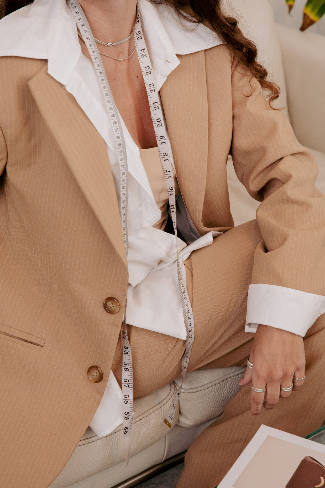
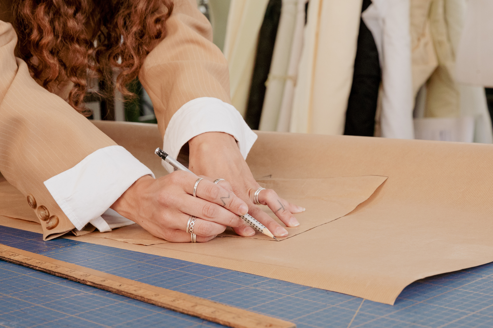
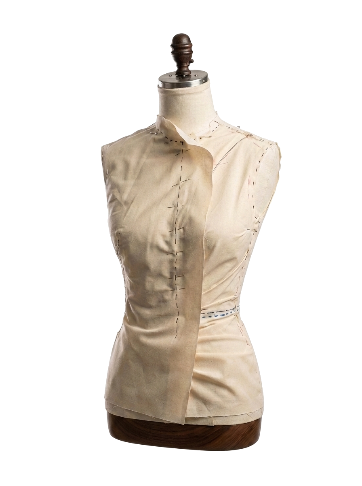
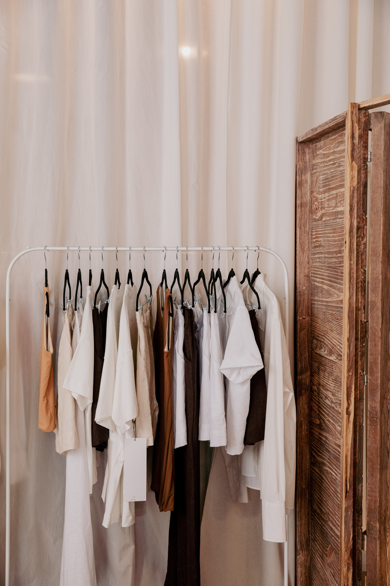
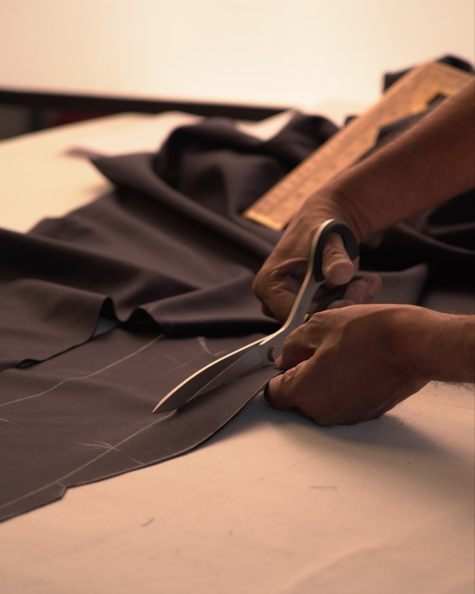
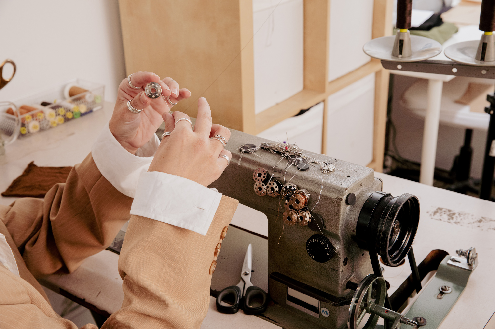
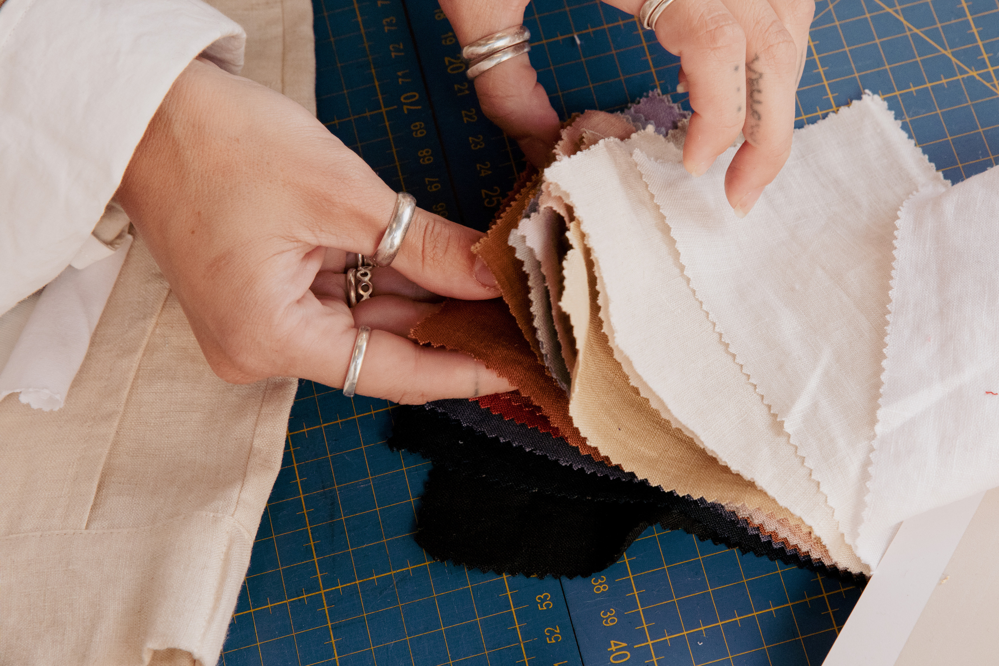
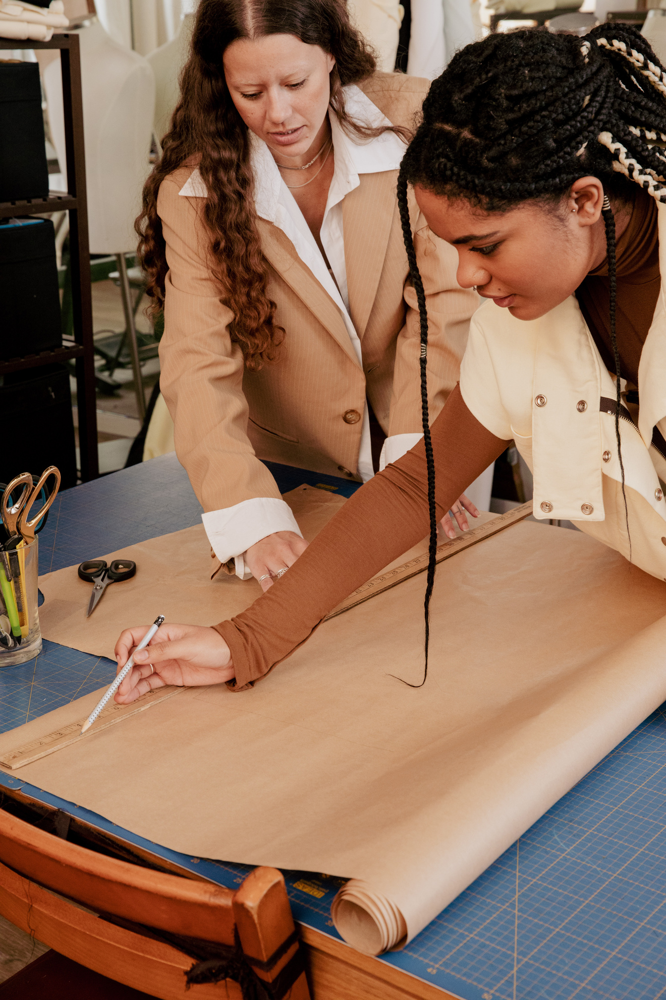
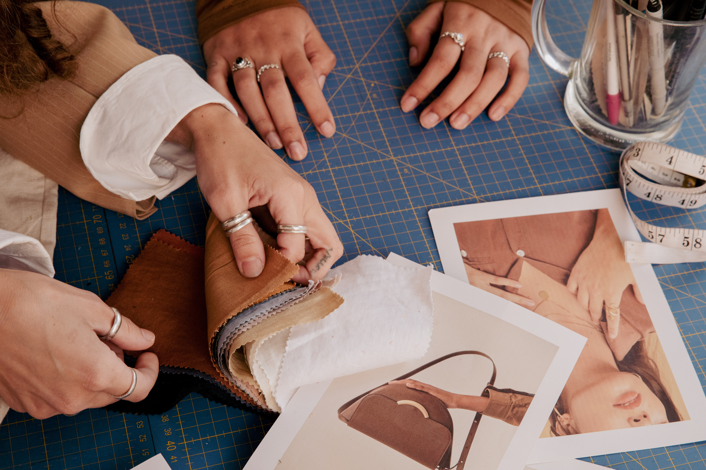
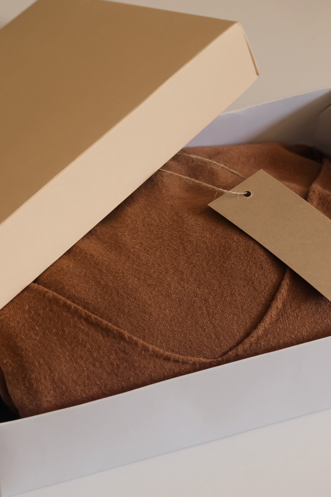

01
Bespoke
A garment built from nothing but your measurements. Hand-drafted pattern, multiple fittings, entirely your own.

Bespoke · Made to Measure · Alterations
A modern heritage atelier where every garment begins with a conversation, a tape measure and a sharp pencil.
The Atelier
At Kingsman, we believe a well-made garment should feel like it was always yours. Our tailors combine time-honoured techniques with a contemporary eye — drafting each pattern by hand, choosing every cloth with care, and fitting until it's right.
No templates. No shortcuts. Just patient work, natural fibres and a fit that moves with you.

Services

A garment built from nothing but your measurements. Hand-drafted pattern, multiple fittings, entirely your own.
Our house patterns, refined to your body and style. Exceptional fit with a shorter turnaround.

Breathe new life into the pieces you love. Precise adjustments by the same hands that cut our bespoke work.
The Process
Every Kingsman garment follows the same unhurried journey — one that puts you, and the cloth, at the centre.
We talk about how you live, what you wear and what you want to feel. Then we take over 25 measurements.
Your pattern is drawn by hand on kraft paper — a blueprint that belongs to you alone.
The cloth is cut and loosely tacked together for your first fitting, so we can sculpt it on your frame.
Refinement over successive fittings, then hand-finishing: buttonholes, pressing and the final details.



The Cloth
Our library holds hundreds of cloths from respected mills — selected for how they drape, breathe and age.
Tightly spun from long-staple fleece for a crisp, resilient drape and clean matte finish. Holds a sharp crease from morning meetings through late dinners.
Client Reviews
4.9 / 5 across 140+ bespoke & made-to-measure fittings
“The first suit I've owned that feels like it was made by someone who actually listened. Three fittings, and the shoulder line sits effortlessly.”
“They guided me through the cloth books without rushing a single decision. My camel pinstripe suit drapes cleanly and feels light enough for all-day wear.”
“From the first pencil sketch on kraft paper to the final pressing two days before our wedding, every detail felt personal. Easily the finest garment in my wardrobe.”
“I wanted something unstructured for summer travel that still looked sharp at dinner. The unlined Irish linen jacket holds its shape far better than I expected.”
“Brought in a vintage wool coat I was sure couldn't be saved. They reshaped the waist and sleeves by hand — it fits like it was drafted for me from day one.”
“Quiet, unhurried, and meticulous. You notice the difference in the hand-finished buttonholes and how cleanly the collar sits over a jacket.”
Lookbook
A glimpse behind the curtain — the people, tools and moments that shape every garment.



Book a Fitting
Appointments last around an hour. Come as you are — bring a garment you love, or simply an idea.